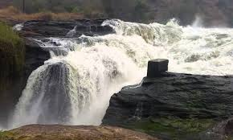
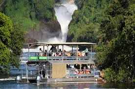
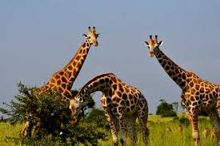
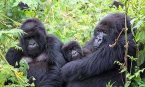
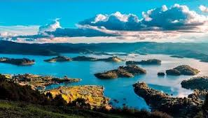
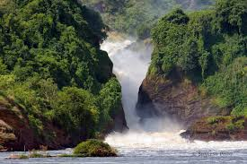

Jinja — The Source of the Nile
Whitewater rafting, cultural tours, and lakeside adventures.
Watch Video




Whitewater rafting, cultural tours, and lakeside adventures.
Watch Video


Select a tourist attraction:
Select a payment method:
NAME:MATOVU JOVAN
REGNO:2025_D302_13364
COURSE:DIT

Murchison Falls, located in northwestern Uganda.Murchison Falls, located in northwestern Uganda within Murchison Falls National Park, is one of the country’s most breathtaking natural landmarks. The park, which spans about 3,840 square kilometers, is the largest in Uganda and is situated along the Victoria Nile, just downstream of Lake Albert. The falls themselves occur where the Nile is forced through a narrow gorge approximately seven meters wide before plunging 43 meters into the river below, creating a spectacular display of power and mist. Named after Sir Roderick Murchison, a British geologist who explored the region in the 19th century, Murchison Falls is often referred to as the “Devil’s Cauldron” because of the sheer force and volume of water crashing through the gorge. The surrounding landscape is a striking contrast of lush greenery and open savannah, providing a haven for a remarkable diversity of wildlife. Visitors to the park can encounter elephants, giraffes, lions, hippos, crocodiles, buffaloes, and over 450 species of birds, making it a paradise for nature lovers and wildlife enthusiasts. The falls themselves offer multiple ways to experience their beauty, including boat trips from Paraa to the base of the falls, which provide close encounters with hippos, crocodiles, and aquatic birds. Hiking trails lead to the top of the falls, offering panoramic views of the river funneling through the gorge, while game drives across the park reveal the rich diversity of savannah animals. The Nile and surrounding wetlands are also ideal for fishing and birdwatching, adding to the range of activities available to visitors. Murchison Falls combines natural power, scenic beauty, and abundant wildlife, making it a must-see destination for anyone visiting Uganda. The energy of the falls has even been harnessed for hydroelectric power, yet the focus of the area remains on tourism and conservation. The combination of dramatic waterfalls, vibrant landscapes, and diverse wildlife ensures that a visit to Murchison Falls is an unforgettable experience, offering both adventure and a profound appreciation of Uganda’s natural wonders.
Queen Elizabeth National Park, located in western Uganda. Queen Elizabeth National Park, located in western Uganda, is one of the country’s most famous and diverse wildlife destinations, covering approximately 1,978 square kilometers and stretching across the Kazinga Channel, which links Lake Edward and Lake George. The park features a remarkable variety of habitats, including savannah, wetlands, forests, and crater lakes, which together support over 95 mammal species and more than 600 bird species, making it a paradise for safari enthusiasts and birdwatchers alike. It is also culturally significant, as several local communities have lived alongside its wildlife for generations, maintaining a unique relationship with the land. Visitors to the park can enjoy thrilling safaris, spotting elephants, lions, leopards, hippos, buffaloes, and antelopes roaming freely across the savannah. One of the park’s most famous attractions is the Kazinga Channel, where boat safaris offer close encounters with massive pods of hippos, crocodiles, and a wide variety of birds. The Ishasha sector is particularly renowned for its rare tree-climbing lions, a phenomenon where lions rest in fig trees during the heat of the day, creating one of Africa’s most iconic wildlife experiences. Beyond wildlife, the park also offers scenic crater lakes, rolling hills, and lush forests to explore, as well as opportunities for guided nature walks and cultural experiences with local communities. With its combination of diverse ecosystems, abundant wildlife, striking landscapes, and accessibility from major towns like Kampala and Fort Portal, Queen Elizabeth National Park provides an unforgettable adventure for anyone seeking to experience the beauty and richness of Uganda’s natural world.
Jinja is Uganda's adventure capital. Jinja, a vibrant town in eastern Uganda, is famously known as the Source of the Nile, where the mighty river begins its journey from Lake Victoria and winds its way northward through Africa. This historic and scenic location attracts visitors from around the world, offering a unique blend of natural beauty, adventure, and cultural significance. The Nile at Jinja is surrounded by lush greenery and rolling landscapes, creating a stunning backdrop for activities such as white-water rafting, kayaking, boat cruises, and fishing, making it one of the top adventure tourism spots in Uganda. Beyond adrenaline-filled experiences, Jinja also provides opportunities to explore local culture, markets, and traditional fishing communities along the riverbanks. The town has grown into a hub for tourism, with cozy lodges, riverside resorts, and guided tours that allow visitors to witness the impressive flow of the Nile as it emerges from Lake Victoria. Its combination of breathtaking scenery, thrilling activities, and historical importance as the starting point of the world’s longest river makes Jinja an unforgettable destination for nature lovers, adventurers, and anyone curious about Africa’s iconic waterways.
Bwindi is a UNESCO World Heritage site. Bwindi Impenetrable National Park, located in southwestern Uganda along the border with the Democratic Republic of Congo, is one of the world’s most extraordinary and unique natural reserves, covering about 331 square kilometers of dense, misty forest so thick it is often described as “impenetrable.” The park is globally renowned for being home to nearly half of the world’s population of mountain gorillas, making it a critical site for conservation and a bucket-list destination for wildlife enthusiasts. Beyond gorillas, Bwindi hosts a remarkable diversity of wildlife, including chimpanzees, forest elephants, golden monkeys, bushbucks, and over 350 species of birds, creating a paradise for both primate lovers and birdwatchers. Visitors can embark on guided gorilla trekking adventures, where small groups are led by trained guides through the dense forest to observe these gentle giants in their natural habitat, an awe-inspiring experience that emphasizes respect for wildlife and conservation. The park’s lush environment is filled with rare plants, orchids, and towering trees, offering a mystical and breathtaking backdrop for every visit. Local communities, including the Batwa people, live near the park and provide cultural insights into traditional forest life and conservation efforts, adding a human dimension to the wilderness experience. With its combination of thrilling wildlife encounters, stunning scenery, and rich cultural heritage, Bwindi Impenetrable National Park stands as one of Uganda’s most remarkable destinations, offering visitors a rare opportunity to connect deeply with nature and witness some of the planet’s most endangered species in their natural home.
Lake Bunyonyi is serene. Lake Bunyonyi, often called the “Switzerland of Africa,” is a stunning freshwater lake located in southwestern Uganda near the town of Kabale. Nestled in a series of terraced hills at an altitude of about 1,962 meters (6,437 feet) above sea level, the lake is famous for its serene beauty, calm waters, and scenic landscapes. With a maximum depth of around 900 meters, it is one of the deepest lakes in Africa and is dotted with 29 small islands, some of which are inhabited by local communities, each with its own unique stories and traditions. Lake Bunyonyi’s peaceful waters and lush surroundings make it a popular destination for relaxation, canoeing, swimming, and birdwatching, as the area hosts a variety of bird species including kingfishers and herons. The lake is also rich in culture and history, with local legends and tales connected to the islands and surrounding hills. Visitors can interact with the Batwa and Bakiga communities, learn about their traditions, and explore the islands via boat trips, which provide breathtaking views of the terraced hills and reflections on the clear water. Unlike many other lakes, Lake Bunyonyi is free from crocodiles and hippos, making it safer for swimming and other water activities. Its combination of breathtaking scenery, tranquil atmosphere, and cultural richness makes Lake Bunyonyi a perfect getaway for those seeking both adventure and relaxation, offering a unique glimpse into one of Uganda’s most picturesque and peaceful natural destinations.